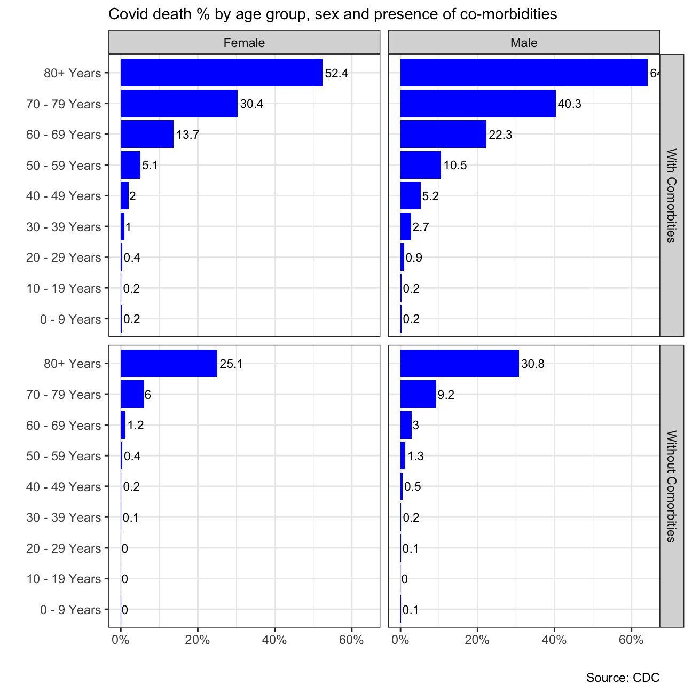
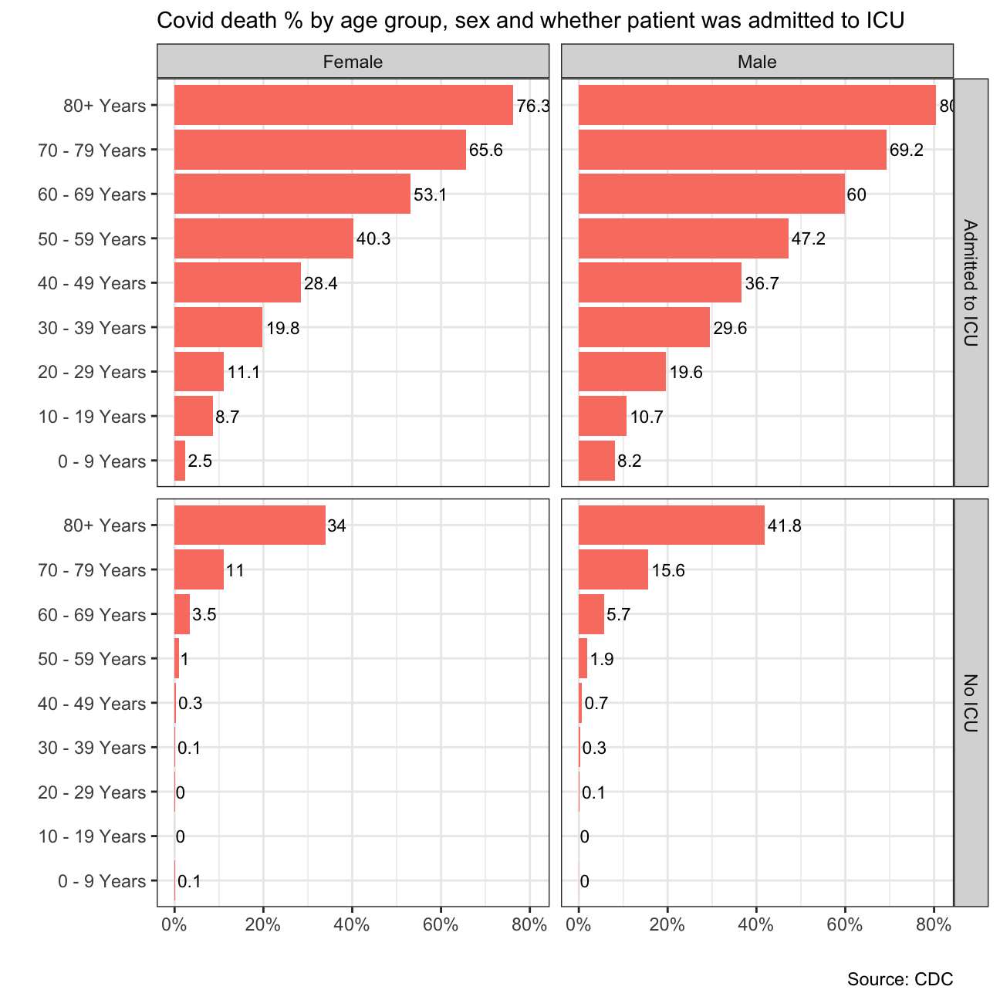

Let us revisit the CDC Covid-19 Case Surveillance Data.
# file contains 11 variables and 3.66m rows and is well over 380Mb.
# It will take time to download
# URL link to CDC to download data
url <- "https://data.cdc.gov/api/views/vbim-akqf/rows.csv?accessType=DOWNLOAD"
covid_data <- vroom::vroom(url) %>% # If vroom::vroom(url) doesn't work, use read_csv(url)
clean_names()Given the data we have, I would like you to produce two graphs that show death % rate: 1. by age group, sex, and whether the patient had co-morbidities or not
#create dataset for Covid death % by age group, sex and presence of co-morbidities
covid_data_comorbidities <- covid_data %>%
#clean the dataset to get rid of the missing values
filter(sex %in% c("Male", "Female"),
!age_group %in% c("Unknown", NA),
medcond_yn %in% c("Yes", "No"),
death_yn %in% c("Yes", "No")) %>%
#group the variables of interest
group_by(sex, age_group, medcond_yn) %>%
#calculate the death rate
summarise(death = sum(death_yn == "Yes"), total = n()) %>%
mutate(death_rate = (death / total * 100)) %>%
select(sex, age_group, medcond_yn, death_rate)library(scales) #include this library in the loadlibraries section
#plot the covid_data_comorbitities dataset
ggplot(covid_data_comorbidities, aes(x = death_rate, y = age_group)) +
#create graph in blue with digit and using facet_grid
geom_col(fill = "blue") +
geom_text(aes(label = round(death_rate, digits = 1)), hjust = -0.1, size = 3) +
facet_grid(medcond_yn~sex, as.table = FALSE, labeller = labeller(medcond_yn = c("Yes" = "With Comorbities", "No" = "Without Comorbities"))) +
#include title, source, theme and label
labs(title = "Covid death % by age group, sex and presence of co-morbidities", x = "", y = "", caption = "Source: CDC") +
scale_x_continuous(labels = label_percent(scale = 1)) +
theme_bw() +
theme(plot.title = element_text(size = 11)) +
NULL
#create dataset for Covid death % by age group, sex and whether patient was admitted to ICU
covid_data_icu <- covid_data %>%
#clean the dataset to get rid of the missing values
filter(sex %in% c("Male", "Female"),
!age_group %in% c("Unknown", NA),
icu_yn %in% c("Yes", "No"),
death_yn %in% c("Yes", "No")) %>%
#group the variables of interest
group_by(sex, age_group, icu_yn) %>%
#calculate the death rate
summarise(death = sum(death_yn == "Yes"), total = n()) %>%
mutate(death_rate = (death / total * 100)) %>%
select(sex, age_group, icu_yn, death_rate)#plot the covid_data_icu dataset
ggplot(covid_data_icu, aes(x = death_rate, y = age_group)) +
#create graph in salmon with digit and using facet_grid
geom_col(fill = "salmon") +
geom_text(aes(label = round(death_rate, digits = 1)), hjust = -0.1, size = 3) +
facet_grid(icu_yn~sex, as.table = FALSE, labeller = labeller(icu_yn = c("Yes" = "Admitted to ICU", "No" = "No ICU"))) +
#include title, source, theme and label
labs(title = "Covid death % by age group, sex and whether patient was admitted to ICU", x = "", y = "", caption = "Source: CDC") +
scale_x_continuous(labels = label_percent(scale = 1)) +
theme_bw() +
theme(plot.title = element_text(size = 11)) +
NULL